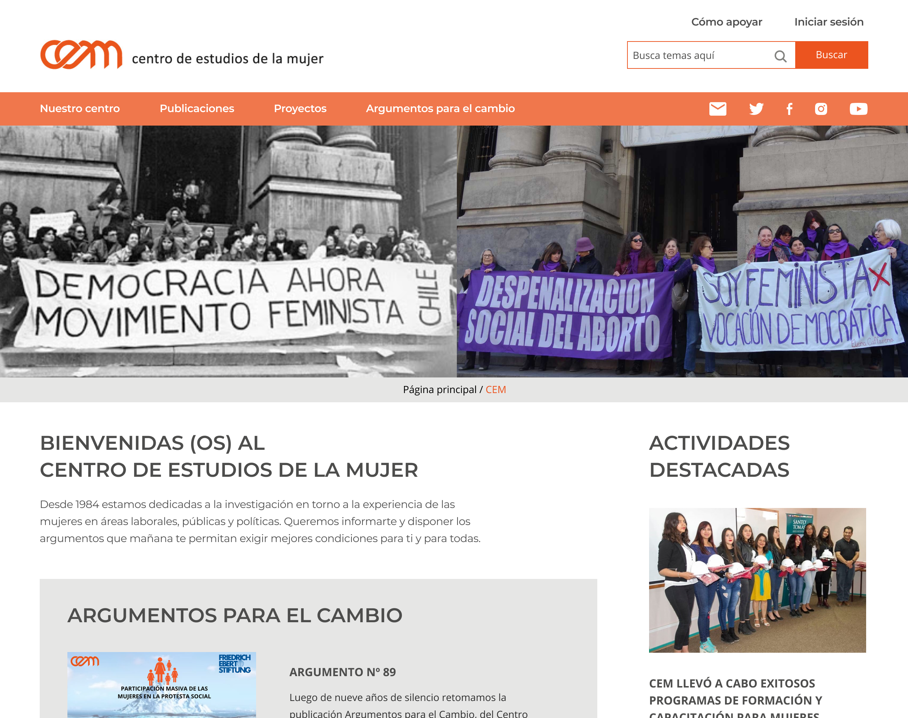
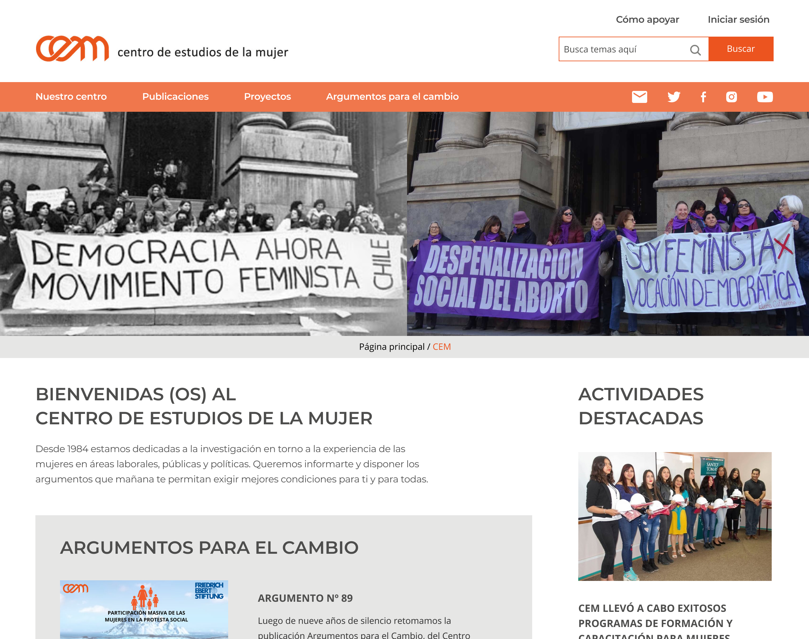

Información del Proyecto
- Categoria: Diseño Web
- Cliente: Centro de Estudio de la Mujer
- Fecha : Septiembre, 2020
- Rol : Ux Designer
- Project URL: Prototipo en Figma
Rediseño página web CEM
Se nos planteo como desafío generar una propuesta de diseño de la página web del Centro de Estudio de la Mujer, surge la necesidad de mejorar la experiencia de las usuarias que desean saber más de las actividades del CEM, del tema de estudio de género que realizan, además documentarse sobre las investigaciones y publicaciones que ha realizado el CEM a lo largo de su trayectoria y demostrar la importancia que ha tenido este centro en las políticas públicas en los 30 años de trayectoria.
La renovación de esta página se realizó a partir de las necesidades del cliente y de sus usuarias. Se realizó un proceso de investigación exhaustivo, determinando a través de entrevistas y testeos y de análisis de usabilidad, los puntos de oportunidad de mejora que tiene la página actual.
Se definierón dos tipos de usuarias, realizando un mapa de empatía, benchmarking, un journey map junto con un storyboard.
Luego de esta fase, se realizo la etapa de síntesis e ideación, donde se determinaron los grandes insigth y como poder plantear una solución mediante ideas y propuestas. Se realizó un wireframe cuyos elementos fueron testeados y así definir el prototipo de alta fidelidad.
Como resultado, se obtuvo un diseño actual y moderno, siguiendo la gama de colores institucional, tomando en cuenta la usabilidad y accesibilidad, basándonos en las necesidades de las usuarias y del cliente para realizar este rediseño web.